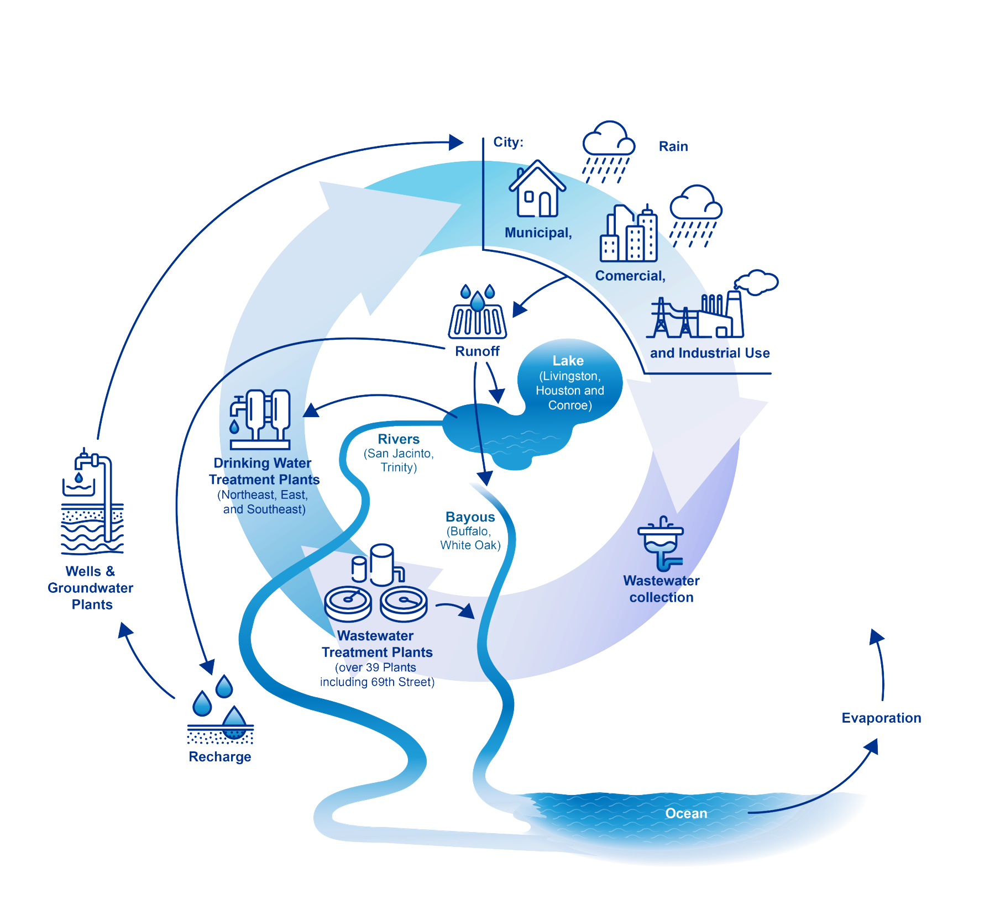
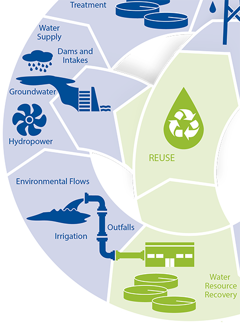
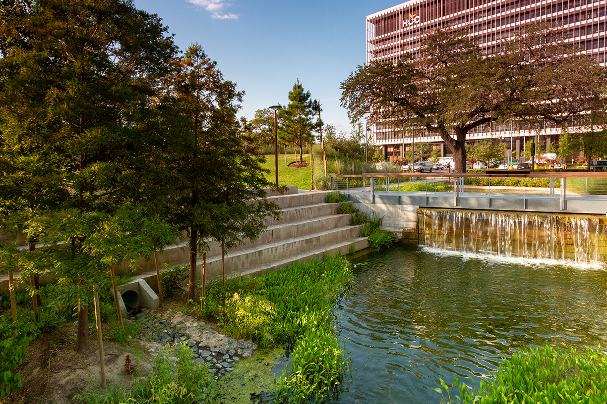
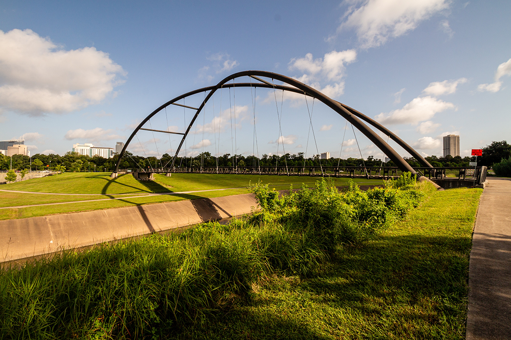

Interconnected Water Systems
Human activities, infrastructure, and urban landscapes all affect the natural water cycle — creating an urban water cycle.

Click on the magnifying glass to see an example of how parts of the urban water cycle are related.
Interconnected Water Systems

Cause:
Debris, oil, pesticides, nutrients and/or heavy metals can end up in nearby rivers and lakes through rainfall runoff.
Effect:
- Increased stress on treatment facilities
- Debris accumulation and flooding
- Reduced water quality
Click anywhere to continue.
Interconnected Water Systems
Here in Houston, opportunities for positive interconnection might include:
-
Bayou Revitalization
✔ Transform bayous into multi‑purpose corridors for stormwater, recreation, and habitat restoration
✔ Economic growth and connectivity -
Water Reuse
✔ Expand programs for recycled water for irrigation, industrial processes, and replenishment of natural sources -
Integrated Flood Management
✔ Combine green infrastructure (e.g., rain gardens, bioswales) with traditional flood control measures -
Groundwater Recharge
✔ Protect and enhance aquifers through strategic recharge programs


Click anywhere to return to the main topic.